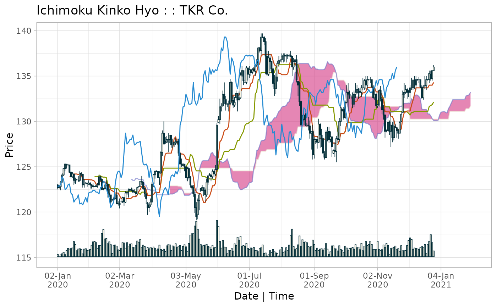

Create an ichimoku object containing values for all components of the Ichimoku Kinko Hyo cloud chart. The object encapsulates a date-time index, OHLC pricing data, candle direction, the cloud lines Tenkan-sen, Kijun-sen, Senkou span A, Senkou span B and Chikou span, as well as values for the cloud top and cloud base.
ichimoku(x, ...) # S3 method for ichimoku ichimoku(x, ticker, periods = c(9L, 26L, 52L), keep.data, ...) # S3 method for xts ichimoku(x, ticker, periods = c(9L, 26L, 52L), keep.data, ...) # S3 method for data.frame ichimoku(x, ticker, periods = c(9L, 26L, 52L), keep.data, ...) # S3 method for matrix ichimoku(x, ticker, periods = c(9L, 26L, 52L), keep.data, ...) # S3 method for default ichimoku(x, ticker, periods = c(9L, 26L, 52L), keep.data, ...)
Arguments
| x | a data.frame or other compatible object, which includes xts, data.table, tibble, and matrix. |
|---|---|
| ... | additional arguments, for instance 'holidays', passed along to
|
| ticker | (optional) specify a ticker to identify the instrument, otherwise this is set to the name of the object supplied. |
| periods | [default c(9L, 26L, 52L)] a vector defining the length of periods used for the cloud. This parameter shoud not normally be modified as using other values would be invalid in the context of traditional ichimoku analysis. |
| keep.data | (optional) set to TRUE to retain additional data present in the object supplied as additional columns and/or attributes. |
Value
An ichimoku object is returned with S3 classes of 'ichimoku', 'xts' and 'zoo'.
Details
Calling an ichimoku object automatically invokes its print method, which by default produces a printout of the data to the console as well as a plot of the cloud chart to the graphical device.
For further options, use plot() on the returned ichimoku object to
pass further arguments for customising the chart. Use iplot() for
interactive charting.
Where an ichimoku object is passed to ichimoku(), the ichimoku
object is re-calculated using the OHLC pricing data contained within.
Object Specification
Index:
index(object): date-time index [POSIXct]
Columns [numeric]:
object$open: opening price$high: high price$low: low price$close: closing price$cd: candle direction (-1 = down, 0 = flat, 1 = up)$tenkan: Tenkan-sen$kijun: Kijun-sen$senkouA: Senkou span A$senkouB: Senkou span B$chikou: Chikou span$cloudT: cloud Top (max of senkouA, senkouB)$cloudB: cloud Base (min of senkouA, senkouB)
Attributes:
attributes(object)$periods: parameters used to calculate the cloud [integer vector of length 3]$periodicity: periodicity of the data in seconds [numeric]$ticker: instrument identifier [character]
Working with ichimoku objects
An ichimoku object inherits the 'xts' and 'zoo' classes. For convenience, the following functions are re-exported by ichimoku:
from 'zoo':
index(): to extract the index of an ichimoku objectcoredata(): to extract the columns of an ichimoku object as a numeric matrix
from 'xts':
xts(): to create an 'xts' object from data and a date-time index usexts(data, index)
Additional methods are available by loading the 'xts' package.
Further Details
ichimoku() requires OHLC (or else HLC) price data as input to
calculate the cloud chart values.
If only single series price data is supplied, a pseudo OHLC series is generated and a pseudo cloud chart is returned.
Please refer to the reference vignette by running:
vignette("reference", package = "ichimoku")
Examples
#> open high low close cd tenkan kijun senkouA senkouB #> 2020-05-19 23:00:00 122.7 122.7 121.8 122.4 -1 121.05 123.90 125.675 124.85 #> 2020-05-20 23:00:00 122.4 122.6 121.1 121.9 -1 121.05 123.90 125.675 124.85 #> 2020-05-21 23:00:00 121.9 123.7 121.7 123.3 1 121.40 123.80 125.675 124.85 #> 2020-05-24 23:00:00 123.3 124.0 123.0 124.0 1 121.55 123.80 125.675 124.85 #> 2020-05-25 23:00:00 124.2 124.3 124.0 124.1 -1 121.75 123.65 125.975 124.85 #> 2020-05-26 23:00:00 124.1 124.1 123.4 123.9 -1 122.25 123.65 126.475 124.85 #> 2020-05-27 23:00:00 123.9 124.7 123.7 124.5 1 122.90 123.65 126.575 124.85 #> 2020-05-28 23:00:00 124.5 124.7 123.9 124.2 -1 122.90 123.60 126.250 124.85 #> 2020-05-31 23:00:00 124.2 125.2 124.0 124.7 1 123.15 123.60 126.150 124.85 #> 2020-06-01 23:00:00 124.7 129.8 124.7 129.6 1 125.45 124.45 125.675 124.85 #> 2020-06-02 23:00:00 129.9 130.6 129.9 130.2 1 126.15 124.85 125.625 124.85 #> 2020-06-03 23:00:00 130.2 132.5 129.7 131.6 1 127.75 125.80 125.625 124.85 #> 2020-06-04 23:00:00 131.6 132.0 131.1 131.7 1 127.95 125.80 125.550 124.85 #> 2020-06-07 23:00:00 131.7 133.4 131.6 133.0 1 128.40 126.25 125.425 124.85 #> 2020-06-08 23:00:00 133.0 134.3 131.9 132.5 -1 129.00 126.70 125.550 124.85 #> 2020-06-09 23:00:00 132.4 132.8 131.2 131.9 -1 129.10 126.70 125.650 124.85 #> 2020-06-10 23:00:00 131.9 132.0 131.6 131.9 0 129.15 126.70 125.875 124.85 #> 2020-06-11 23:00:00 131.9 132.3 131.1 132.0 1 129.50 126.70 125.400 124.85 #> 2020-06-14 23:00:00 132.0 134.7 131.8 134.3 1 132.20 126.90 124.825 124.85 #> 2020-06-15 23:00:00 134.3 134.4 132.0 132.3 -1 132.20 126.90 123.800 124.85 #> 2020-06-16 23:00:00 132.3 132.8 131.5 131.8 -1 132.90 126.90 123.375 124.55 #> chikou cloudT cloudB #> 2020-05-19 23:00:00 135.1 125.675 124.850 #> 2020-05-20 23:00:00 135.6 125.675 124.850 #> 2020-05-21 23:00:00 134.5 125.675 124.850 #> 2020-05-24 23:00:00 134.3 125.675 124.850 #> 2020-05-25 23:00:00 135.9 125.975 124.850 #> 2020-05-26 23:00:00 135.2 126.475 124.850 #> 2020-05-27 23:00:00 135.7 126.575 124.850 #> 2020-05-28 23:00:00 135.4 126.250 124.850 #> 2020-05-31 23:00:00 135.7 126.150 124.850 #> 2020-06-01 23:00:00 135.6 125.675 124.850 #> 2020-06-02 23:00:00 136.2 125.625 124.850 #> 2020-06-03 23:00:00 136.5 125.625 124.850 #> 2020-06-04 23:00:00 138.1 125.550 124.850 #> 2020-06-07 23:00:00 137.8 125.425 124.850 #> 2020-06-08 23:00:00 139.3 125.550 124.850 #> 2020-06-09 23:00:00 139.3 125.650 124.850 #> 2020-06-10 23:00:00 138.8 125.875 124.850 #> 2020-06-11 23:00:00 137.2 125.400 124.850 #> 2020-06-14 23:00:00 135.2 124.850 124.825 #> 2020-06-15 23:00:00 137.0 124.850 123.800 #> 2020-06-16 23:00:00 136.6 124.550 123.375kumo <- ichimoku(TKR, ticker = "TKR Co.", periods = c(9, 26, 52), keep.data = TRUE) plot(kumo, theme = "solarized", type = "bar", custom = "volume")